The battery energy storage system (BESS) industry is experiencing explosive growth, driven by falling costs and the urgent need for grid stability. Yet beneath this success story lies a sobering reality: nearly one in five BESS projects suffer from operational issues that directly erode revenue and reliability. According to ACCURE Battery Intelligence groundbreaking 2025 Energy Storage System Health & Performance Report—the first comprehensive analysis drawing from over 100 grid-scale BESS projects spanning 18 GWh globally—19% of hardware components triggered operational problems that materially impact financial returns.
This finding should serve as a wake-up call for developers, asset owners, and operators across India's rapidly expanding BESS landscape. Understanding why these systems underperform and how to prevent such failures is critical to protecting investments and accelerating India's energy storage goals.
The Scale of the Problem
The ACCURE report analyzed time-series operational data from more than 100 commercially operating BESS projects worldwide, each exceeding 10 MWh in capacity. The 19% underperformance rate manifests through automatic shutdowns (tripped events) designed to prevent equipment damage, recurring safety alerts, and rack- or module-level imbalances that reduce usable capacity and potentially accelerate degradation.
These aren't minor technical hiccups. When hardware components repeatedly trip, energy output drops, revenue streams dry up, and system reliability deteriorates. Industry data suggests that unaddressed operational issues can reduce site revenue by more than 10%, with imbalances from a single problematic cell causing daily losses of 18 MWh—translating to approximately $1 million in annual revenue impact.
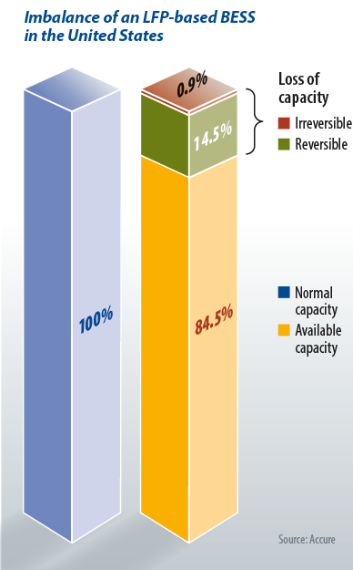
The financial implications extend beyond immediate revenue loss. A survey of BESS professionals revealed that 46% encounter technical issues at least monthly, with operations and maintenance staff experiencing problems even more frequently at 73%. This creates a dangerous disconnect between technical teams who see daily struggles and asset managers who may only recognize issues when tied to tangible financial impact.
Root Causes of Underperformance
Cell and Rack Imbalance: The "Rotten Apple Effect"
Cell and rack imbalance emerged as one of the most pervasive causes of BESS underperformance. In large-scale installations comprising hundreds of thousands of cells organized into modules and racks, synchronization is essential. When individual racks connected to the same Power Conversion System exhibit different operational characteristics—particularly varying State of Charge levels, capacities, or internal resistances—the entire system suffers from what industry experts call the "rotten apple effect".
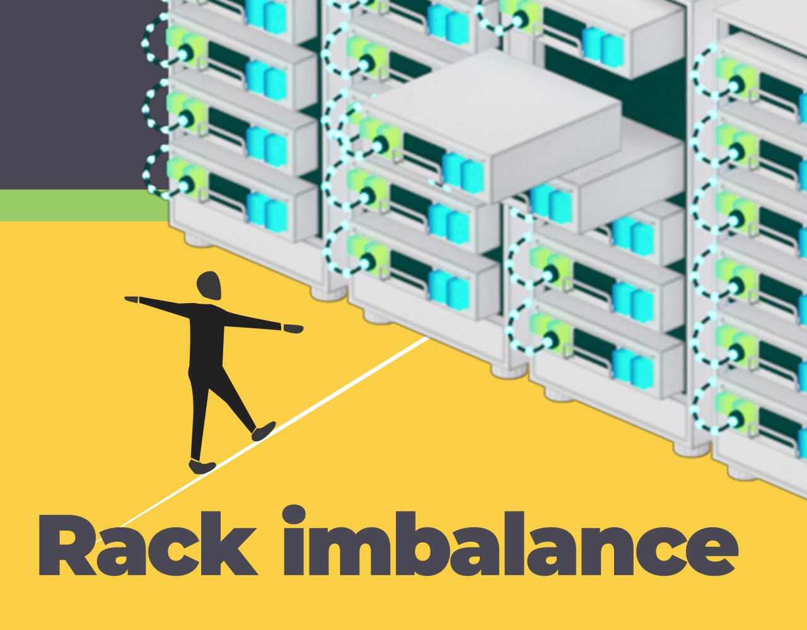
When some racks reach voltage limits before others, the entire battery string or container must stop charging or discharging prematurely, leaving usable energy stranded and inaccessible. This imbalance stems from multiple sources: manufacturing variations in cell capacity (sometimes exceeding 6% within the same batch), uneven heat distribution creating localized temperature gradients, prolonged transportation and storage periods where cells self-discharge at rates up to 3% per month, and State of Charge estimation errors particularly pronounced in Lithium Iron Phosphate (LFP) systems.
The ACCURE report found that battery State of Charge estimation errors of ±15% are common in LFP systems, though projects using advanced analytics can reduce these errors to ±2%—unlocking greater trading flexibility and improved returns.
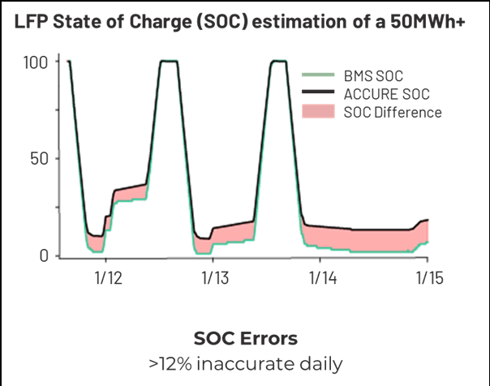
Round-Trip Efficiency Losses
Round-trip efficiency (RTE)—the ratio of energy discharged to energy charged—serves as a critical performance indicator. Best-in-class systems reached RTEs above 88%, representing more than one-third of projects studied. However, systems falling below 85% indicate optimization opportunities, while anything under 83% at beginning of life raises immediate red flags.
Even seemingly small efficiency losses of just 1-2% translate into millions of dollars in lost lifetime revenue. RTE losses occur through multiple pathways: heat dissipation during charge-discharge cycles, inverter inefficiencies typically ranging from 1-4%, battery internal resistance, self-discharge, and thermal management system energy consumption.
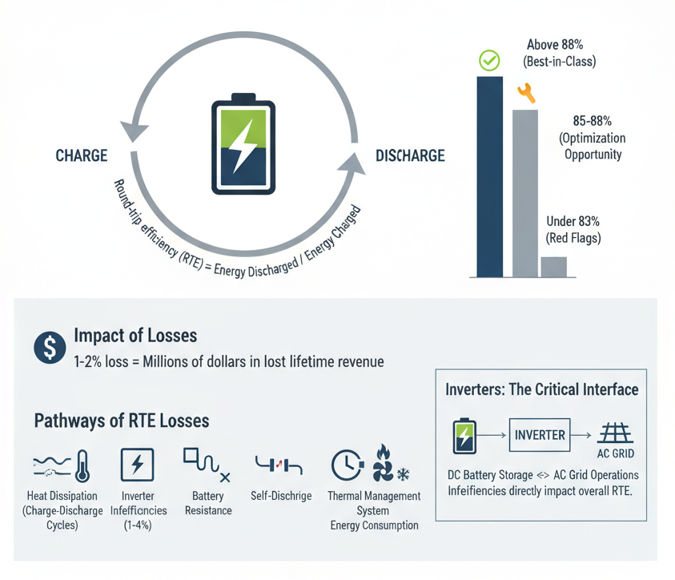
Inverters play a foundational yet often underappreciated role in system performance. As the critical interface between DC battery storage and AC grid operations, inverter inefficiencies directly impact overall system RTE and represent a significant contributor to energy losses.
Commissioning Failures and Testing Shortfalls
The commissioning phase represents a critical quality gate, yet the ACCURE report revealed that only 83% of projects met or exceeded nameplate capacity during Site Acceptance Testing (SAT). This shortfall underscores fundamental gaps in design, procurement, and commissioning processes that allow substandard systems to reach operational status.
Commissioning delays compound these problems. The report found that 46% of BESS projects face commissioning delays of three months or longer, with 1-2 month delays considered the norm and some projects missing online dates by as much as nine months. These delays defer revenue generation, increase project costs, and can impact battery health due to prolonged idling or incomplete system checks.
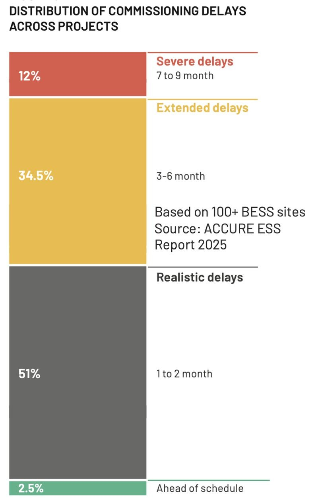
Common commissioning challenges include cell balancing issues where cells with lower capacity or higher resistance discharge faster and impact overall energy output, State of Charge estimation errors from measurement inaccuracies or BMS data misinterpretation, inadequate thermal management verification, and integration problems between battery systems and Power Conversion Systems.
Integration and Construction Quality Issues
Research from the Electric Power Research Institute EPRI analyzing BESS failure incidents concluded that sub-standard integration, assembly, and construction work was the root cause in 36% of BESS failures—more than any other single phase. By comparison, only 29% of failures were attributable to the operational phase, 21% to design issues, and just 4% to manufacturing defects.
A common mistake during integration involves combining components from multiple suppliers that were not necessarily designed to work together. The vast majority of integration-related failures involved balance of system components including DC and AC wiring, HVAC subsystems, and safety elements such as fire suppression systems.
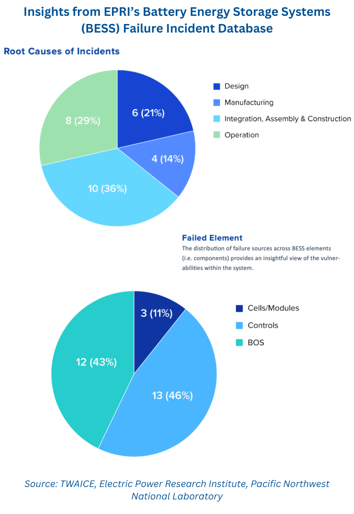
The 2021 Victoria Big Battery incident in Australia exemplifies these risks. During commissioning, a coolant leak led to a fire that destroyed two Tesla Megapacks. The subsequent investigation traced the incident to coolant system quality issues and undetected short circuits, raising critical questions about liability, insurance, and risk allocation.
Data Quality and Monitoring Deficiencies
The ACCURE report found that 20% of systems collect only low-quality data, undermining long-term reliability and asset value. Both the frequency of data logging and the transmission method significantly impact accuracy. Lower-resolution data can distort key performance metrics, obscure early fault signs, and delay critical maintenance interventions.
Inadequate monitoring plagued multiple high-profile BESS incidents. Following disturbances in California's grid in 2022, investigations revealed that all affected BESS facilities lacked fast logging capabilities and failed to meet CAISO's 10-millisecond recording data resolution requirements. Additional data quality issues included lack of individual facility metering and inconsistency between BESS facility data and grid operator data. Several facilities experienced meter data "freezing" on the last value at fault onset, preventing thorough analysis.
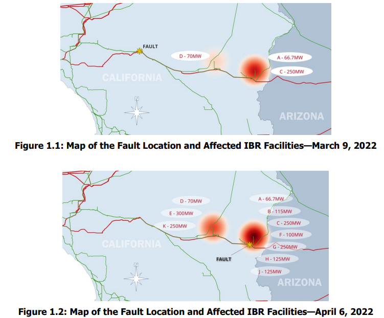
Without high-quality, granular data, operators cannot accurately assess State of Charge, State of Health, detect emerging imbalances, optimize charge-discharge strategies, or validate warranty compliance.
Oversizing Strategies and Financial Implications
Most BESS projects oversized their systems by 15-25% to buffer against degradation and ensure performance over the project lifetime. Smaller sites (under 50 MWh) often exceeded that range, sometimes reaching 30-35%, while larger facilities generally averaged around 20%.
While oversizing provides protection, the strategy carries financial risks. Oversizing below 10% offers insufficient protection against degradation, whereas anything above 30% risks stranding capital in underutilized assets. The challenge lies in balancing upfront capital expenditure against long-term performance requirements and augmentation strategies.
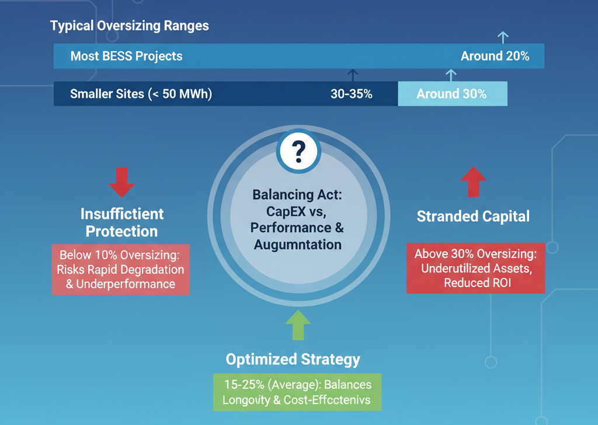
Lessons and Best Practices
Implement Rigorous Commissioning Protocols
Successful commissioning requires moving beyond simple pass/fail SAT results to evaluate whether performance is sustainable over the project lifetime. Best practices include demanding transparency and data access early from vendors to catch problems immediately, conducting multiple charge-discharge cycles to detect potential degradation, implementing digital commissioning with automated capacity reference tests and dynamic stress evaluations at various states of charge, and building schedule buffers while closely monitoring critical-path milestones.
Adopt Advanced Analytics and Real-Time Monitoring
Projects leveraging detailed analytics consistently report improved commissioning outcomes, accelerated market readiness, and greater long-term reliability. Advanced battery management and analytics platforms enable continuous monitoring of critical parameters including voltage, current, temperature, and State of Charge at individual cell and rack levels, detection of emerging imbalances before they impact revenue, precise State of Charge estimation reducing errors from ±15% to ±2%, real-time performance tracking against warranty guarantees, and early identification of thermal anomalies and safety risks.
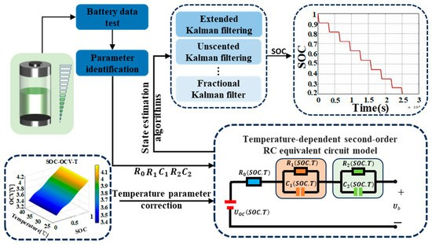
Prioritize Thermal Management
Effective thermal management serves as the foundation for safe, reliable, and efficient energy storage. Temperature extremes significantly accelerate degradation rates, with cells cycled at 55°C showing dramatically reduced lifespans compared to those operated at 25°C. Advanced cooling solutions—particularly active liquid cooling for large-scale installations—can improve battery performance, reduce degradation, prevent thermal runaway, and extend operational lifetime by up to 20%.
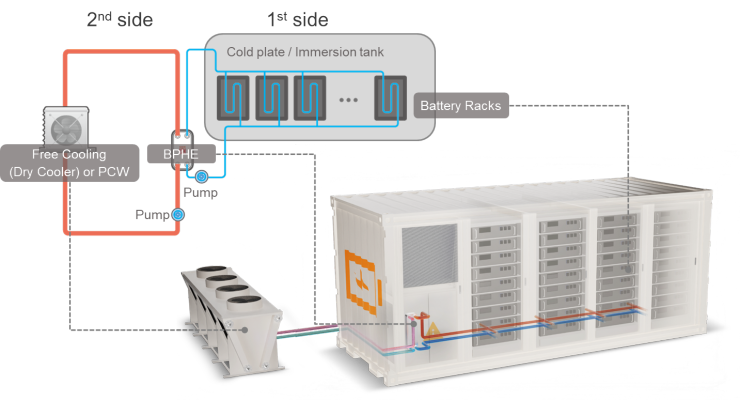
Establish Proactive Maintenance Programs
Transitioning from reactive "fix-it-when-it-breaks" approaches to proactive maintenance strategies can revolutionize asset management and operational efficiency. Proactive maintenance involves regular inspections on scheduled intervals, predictive analytics identifying issues before failures occur, root cause analysis of any performance anomalies, continuous optimization of charge-discharge parameters to minimize degradation, and ongoing training for operations staff on emerging best practices.
Ensure Vendor Accountability Through Contract Structure
Warranty and performance guarantee structures must clearly define metrics including capacity, round-trip efficiency, equivalent full cycles, State of Health thresholds, and acceptable operating conditions. Contracts should specify remediation procedures for underperformance, require high-frequency, high-quality data access for independent verification, establish clear testing procedures including Factory Acceptance Testing and Site Acceptance Testing, and define liquidated damages for delays and performance shortfalls.
Optimize Operations for Long-Term Health
Battery degradation management requires sophisticated operational protocols that balance revenue generation with asset preservation. Maintaining batteries within optimal State of Charge ranges (typically 20-80%) significantly reduces stress on battery chemistry, controlling charging rates particularly at high State of Charge levels to prevent lithium plating and thermal stress, avoiding deep discharge cycles that accelerate capacity fade, implementing precision cell and rack balancing to prevent the "rotten apple effect", and utilizing advanced energy management systems that optimize dispatch while respecting degradation constraints.
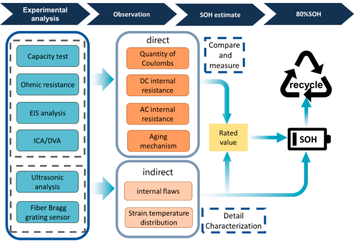
The Path Forward for India's BESS Industry
As India accelerates deployment of battery energy storage to support renewable integration and grid stability, the lessons from global operational data become increasingly relevant. The 19% underperformance rate documented in the ACCURE report demonstrates that technical excellence, rigorous commissioning, advanced analytics, and proactive management are not optional luxuries but fundamental requirements for project success.
For India's BESS ecosystem, these findings suggest several priorities. First, developers and EPC contractors must prioritize quality and integration expertise over lowest-cost procurement, recognizing that 36% of failures stem from poor assembly and construction. Second, independent oversight during commissioning—including digital commissioning reports and performance validation—should become standard practice rather than exception. Third, asset owners must demand high-quality, high-frequency data access as a contractual requirement, enabling independent verification and proactive issue detection.
Fourth, India's evolving BESS workforce requires systematic training in operational best practices, thermal management, analytics-driven maintenance, and warranty enforcement. Finally, policymakers and industry bodies should work toward standardized testing protocols, transparent performance reporting, and clear accountability frameworks that protect investors while advancing technology deployment.